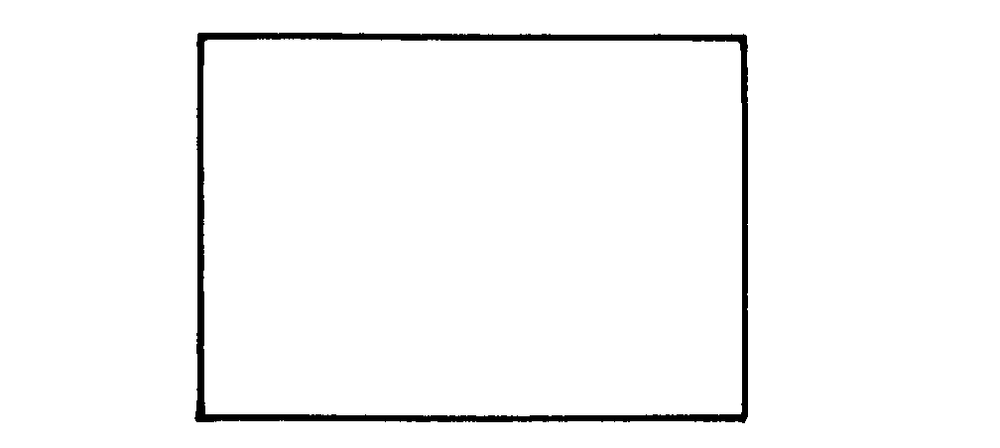
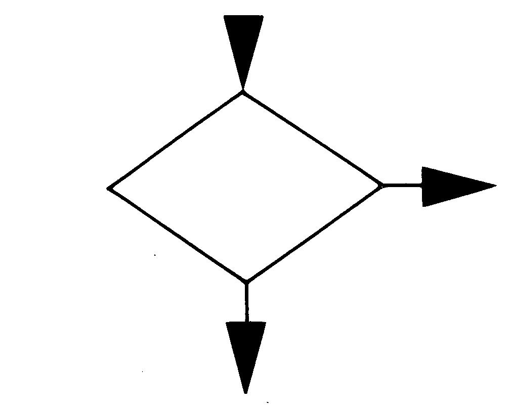
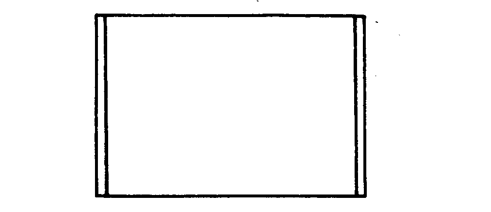
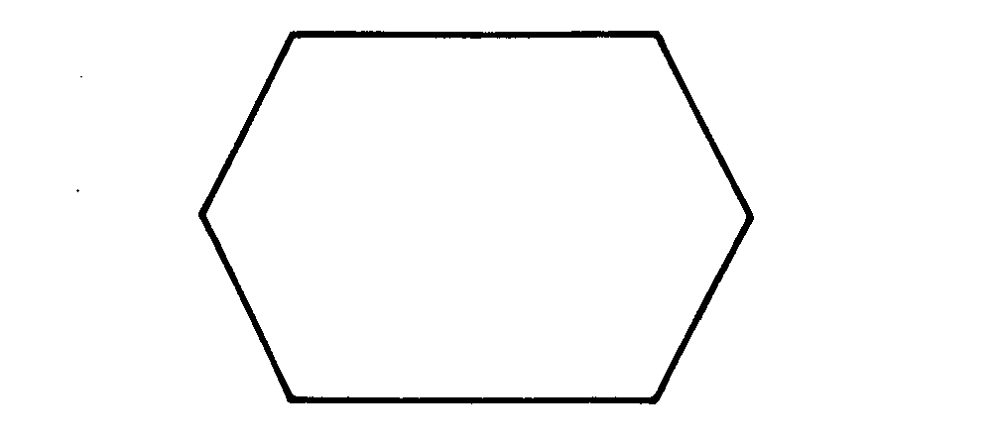
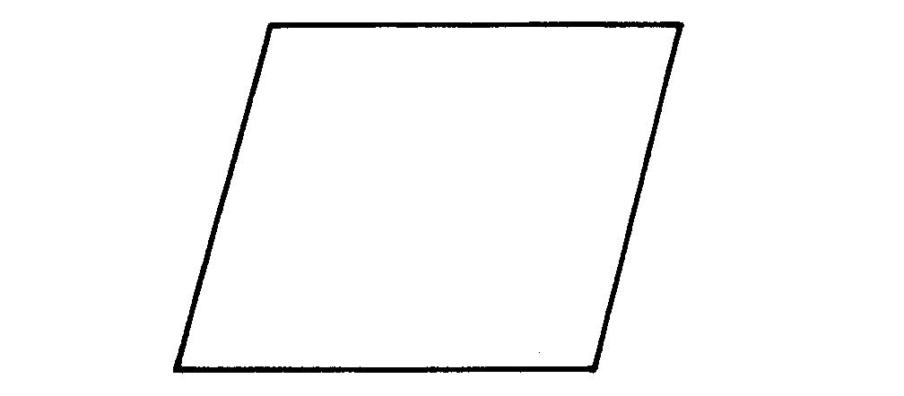
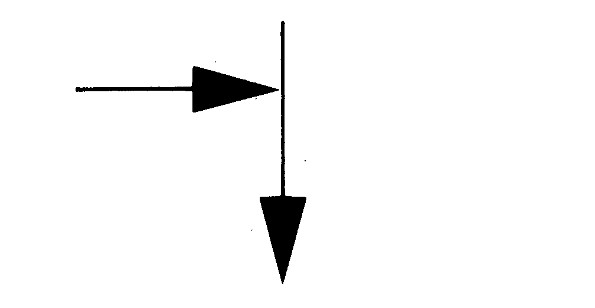
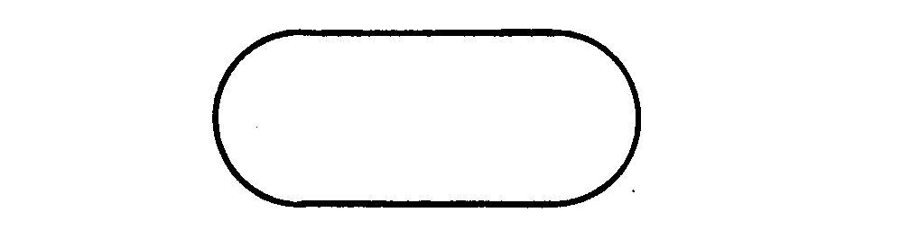
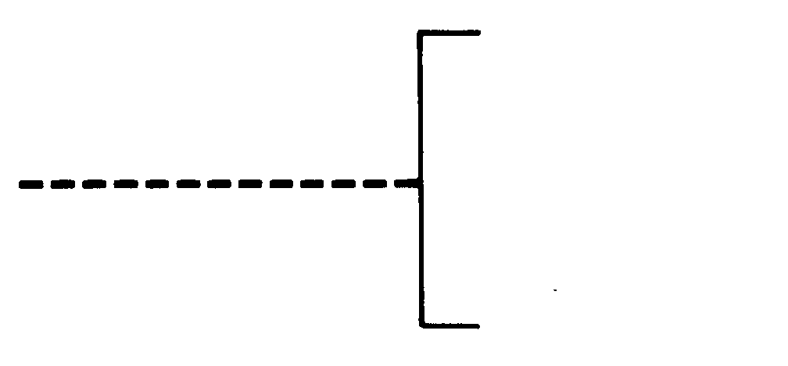

Strukturiertes Programmieren
Nachdem wir in der letzten Ausgabe ein einfaches Spiel entwickett haben, das zum Teil mit Struktogrammen dokumentiert wurde, bringen wir jetzt den Rest des Listings und eine Gegenüberstellung von Flußdiagramm und Struktogramm.
Diese Ausführung des Spiels »TIC TAC TOE» ist recht einfach. Nach gründlicher Überlegung könnte man dieses Programm sofort kodieren. In der Praxis und mit wachsender Programmiererfahrung werden die Aufgaben jedoch bald umfangreicher sein. Professionelle Programmierer fertigen sich, bevor sie anfangen zu kodieren, eine grafische Darstellung des Programmlösungsweges an. Grafiken überblickt der Mensch wesentlich schneller als einfachen Text oder sogar Zahlenkolonnen. Das wohl am häufigsten eingesetzte grafische Hilfsmittel ist der Programmablaufplan (auch Flußdiagramm, Blockdiagramm oder im Englischen: Program Flowchart genannt). Es wird jedoch in den letzten Jahren immer mehr von Struktogrammen (auch Nassi-Shneidermann-Diagramm oder NS-Diagramm genannt) abgelöst. Der Hauptgrund war wohl die Entwicklung höherer Programmiersprachen, die eine Strukturierung eines Programms zulassen. Vor allem sind das Pascal, Fortran 77, Cobol, und Pl/1. Selbst die neuesten Basic Versionen (zum Beispiel das extended Microsoft-Basic oder, etwas eingeschränkt, das Basic 3.5 der neuen Commodore 16 und 264) besitzen Befehle, die eine Strukturierung eines Programms zulassen. Damit ist vor allem der vollkommene Verzicht von GOTO-Sprunganweisungen gemeint. Im Gegensatz zu Programmablaufplänen (PAP) ist in Struktogrammen eine Darstellung von GOTO-Befehlen nicht vorgesehen und wird somit auch nicht unterstützt. Wer mit normalem Standard-Basic arbeitet, das keine Strukturierungsbefehle wie IF..THEN..ELSE, REPEAT UNTIL, DO WHILE und so weiter kennt, braucht dennoch nicht auf Struktogramme verzichten. Wenn man sich an die im Heft 4/84 beschriebenen Regeln zur Strukturierung hält, ist eine Anwendung von Struktogrammen sogar recht sinnvoll.
|  | 1. OPERATION, allgemein Insbesondere für Operationen, die im folgenden nicht besonders aufgeführt sind. Zum Beispiel: Berechnungen, Zuweisungen, Dimensionierungen und so weiter |
|  | 2. VERZWEIGUNG Ein Sonderfall der Verzweigung ist der programmierte Schalter. |
|  | 3. UNTERPROGRAMM Ein Unterprogramm muß nur einmal näher dargestellt werden. Im PAP genügt dann der Hinweis, wann welches Unterprogramm eingesetzt wird. |
|  | 4. PROGRAMMODIFIKATION Zum Beispiel das Stellen von programmierten Schaltern oder das Ändern von Indexregistern. |
 |
5. OPERATION VON HAND Zum Beispiel Formularwechsel, Bandwechsel, Eingriff des Bedieners bei der Prozeßsteuerung |
|  | 6. EINGABE, AUSGABE Ob es sich um eine maschinelle oder manuelle Ein-oder Ausgabe handelt, soll aus der Beschriftung hervorgehen |
|  | 7. ABLAUFLINIE, ZUSAMMENFÜHRUNG Vorzugsrichtungen sind: von oben nach unten, und von links nach rechts. Abweichungen können durch Pfeile deutlich gemacht werden. Zwei sich kreuzende Ablauflinien bedeuten keine Zusammenführung |
| 8. ÜBERGANGSSTELLE Der Übergang kann von mehreren Stellen aus, aber nur zu einer Stelle hin erfolgen. |
|
|  | 9. A GRENZSTELLE Für A kann zum Beispiel Beginn, Ende, Zwischenhalt eingeschrieben werden. |
|  | BEMERKUNG Dieses Sinnbild kann an jedes Sinnbild dieser Norm angefügt werden. |
Doch zunächst möchte ich Ihnen die Symbolik des PAP vorstellen. Schauen wir uns die Tabelle an. Hier sind die wichtigsten und gebräuchlichsten Elemente des PAP aufgeführt.
Symbol 1: Bearbeitung
Man trägt Anweisungen ein; die Schreibweise der Eintragung orientiert sich oft an der zu verwendenden Programmiersprache. Es kann auch eine Gruppe von Anweisungen eingetragen werden.
Symbol 2: Verzweigung
Wenn in einem Programm in Abhängigkeit einer Bedingung der lineare Ablauf unterbrochen werden soll, erfolgt die Eintragung der Bedingung in diesem Symbol.
Symbol 3: Unterprogrammaufruf
Hier wird die Bezeichnung eines Unterprogramms eingetragen. In Basic setzt man am Besten noch die Anfangszeilennummer dazu.
Symbol 4: Programmodifikation
Hier trägt man eine Aktion ein, die den Ablauf an einer zeitlich dahinterliegenden Stelle ändert (wird selten gebraucht).
Symbol 5: Operation von Hand
In manchen Programmen kommt es vor, daß an einer bestimmten Stelle die Diskette oder Kassette gewechselt werden muß. Diese Aktion wird hier eingetragen.
Symbol 6: Eingabe, Ausgabe
Man benutzt dieses Symbol immer, wenn eine Eingabe- oder Ausgabeanweisung im Programmablauf auftritt. Man trägt dabei die Art der Ein-/Ausgabe ein (INPUT oder PRINT oder ähnliches) und den Datensatz, der gelesen oder geschrieben wird.
Symbol 7: Flußlinie
Sie verbindet die Symbole miteinander. Die Pfeilspitzen können weggelassen werden, wenn die Flußrichtung eindeutig ist (normalerweise immer von oben nach unten, von links nach rechts).
Symbol 8: Konnektor, Übergangsstelle
Die Eintragung ist beliebig. Dieses Symbol wird benutzt, um nicht durch zu viele Flußlinien die Übersicht zu verlieren.
Symbol 9: Grenzstelle, Anschlußmarke
Dieses Symbol enthält eine Bezeichnung von Programmbeginn und -ende sowohl von Haupt- als auch von Unterprogrammen.
Symbol 10: Bemerkung
Falls der Platz innerhalb eines Symbols nicht ausreicht, um es zu beschriften, kann man mit diesem Symbol eine Bemerkung hinzufügen.
Unternehmen gehen bei Programmiervorhaben immer mehr dazu über, anstatt von Flußdiagrammen Struktogramme einzusetzen. Sie zwingen den Programmierer zu einer übersichtlichen Programmierung und erlauben es ihm nicht, durch viele GOTOs das Programm »undurchsichtig» zu machen. Wenn man Struktogramme verwendet, kann man auf Programmablaufpläne völlig verzichten. Als Programmierer sollte man beide Darstellungsarten kennen, denn Programmablaufpläne und Struktogramme werden noch lange nebenher bestehen.
Die Elemente des Struktogramms
Jede Aufgabenstellung läßt sich mit den folgenden Grundstrukturen lösen:
Sequenz Auswahl Wiederholung
Diese Grundstrukturen werden zu Strukturblöcken zusammengesetzt und sind beliebig ineinander verschachtelbar.
Sequenz
Eine Sequenz liegt vor, wenn mehrere Anweisungen hintereinander ausgeführt werden sollen (Bild 1).
In die jeweiligen Kästchen trägt man jeweils einen Befehl ein oder auch die Bezeichnung kompletter Programmteile.
Auswahl
Man unterscheidet drei Formen:
IF..THEN / IF..THEN..ELSE / CASE
Man benutzt diese Formen, um Befehle oder Befehlsgruppen oder auch komplette Programmteile nur dann ausführen zu lassen, wenn eine Bedingung erfüllt ist (Bild 2, 3 und 4).
Wiederholung
Man benutzt zwei Formen der Wiederholung:
DO WHILE / REPEAT
Man benutzt diese Formen, um Befehle oder Befehlsgruppen oder auch komplette Programmteile mehrmals hintereinander ausführen zu lassen. Eine Programmschleife kann nur mit diesen Formen realisiert werden (Bild 5 und 6).
Fazit
Beim Struktogramm entfällt völlig die Flußlinie, sie wird ersetzt durch die gemeinsame waagerechte Begrenzungslinie. Struktogramme kann man immer in Programmablaufpläne übertragen, umgekehrt ist es oft nur unter erheblichem Aufwand möglich. Das bedeutet, daß man durchaus auch mit Flußdiagrammen strukturiert programmieren kann; der Zwang dazu entfällt jedoch. Bei der Planung seiner Programme mit Struktogrammen wird man es schwer haben, »Spaghetti-Kode« zu produzieren. Und das ist allemal ein Vorteil. Und machen Sie bitte nicht den Fehler wie so viele (ich schließe mich dabei nicht aus) und erstellen Sie Ihr Flußdiagramm oder Struktogramm erst dann, nachdem Sie kodiert haben und Sie durch Ihr eigenes Programm nicht mehr durchsteigen.
(gk)